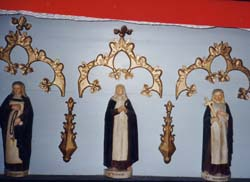
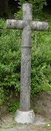
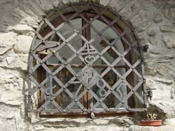

le Baroque
Première approche AsF© 16.

Les photos :
page 153 : église ND de la Gorge, chapelle Le Chattrix, angelot au Chattrix.
page 154 : chapelle de Versoye, chapelle Le Plan, statue de Saint Guérin à Cupelin.
Additifs page 155 : 1 Chamonix 1709-1840 ; 3 = chapelle Bionnasay (XVIIe) ; 3 bis = chapelle Bionnay 1707
Photo ci-contre : dans la chapelle La Combe.
Bibliographie complémentaire :
Eglises et chapelles baroques de la Haute-Savoie (tome 2 : le Faucigny), par Fernand Roulier, éditions Rossat-Mignod, ISBN 2-9507720-4-8. Décrit Chamonix, les Houches, St Gervais, Bionnassay, Bionnay (et non les Praz), Chattrix, St Nicolas de Véroce, les Contamines, ND de la Gorge, ...
Les oratoires de la Haute Savoie, par Lucien Revelin et Madeleine Commeaux, édité en 1991 par le Conseil Général de Hte Savoie (en vente aux Archives Départementales d'Annecy, 15,34 euros).
Notas :
. les 3 tomes "Sur les chemins du Baroque en Savoie" (éditions la Fontaine de Siloé) ne traitent pas des chapelles de la zone AsF© 16, le tome 2 décrit l'église de Séez.
. l'adresse de la FACIM indiquée page 153 a changé :
81 place Saint Léger, 73000 Chambéry, tél 04 79 60 59 00, fax 04 79 60 59 01
www.savoie-patrimoine.com, e-mail : facim@savoie-patrimoine.com

En préparation, un site répertoriant les croix, oratoires et chapelles.
Ici la grille de l'oratoire de Saxel avec la clé "4" du colporteur, et la croix de Chamonix (commune de Magland)
